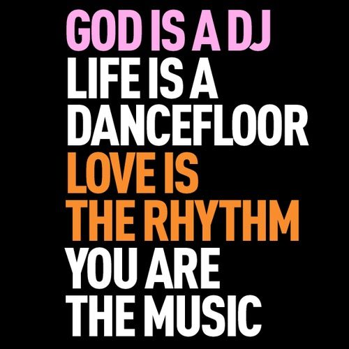

Szexizmus & DJ-k
Mint mindenhol máshol, a szórakoztatóiparban, fesztiválokon és klubokban is fontos téma lett a férfi-női egyenjogúság. A problémát, ilyen keretek között most először, mutatja be a REZZ és Alison Wonderland megnyilvánulásaival is reklámozott film, az Underplayed című alkotás.
